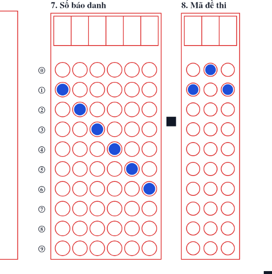

Giới thiệu ExamMark-PTC
ExamMark-PTC là bộ công cụ dành cho giáo viên chạy ngay trên điện thoại (Android APK; iPhone/iPad dùng bản web PWA). Không chỉ là phần mềm chấm thi trắc nghiệm: ExamMark-PTC còn chấm thi tự luận bằng AI, quản lí ngân hàng câu hỏi một cách khoa học và gọn nhẹ, cho phép giao bài và tổ chức thi online, và đặc biệt có vô vàn công cụ phục vụ soạn giáo án, soạn tài liệu dạy học và giảng dạy trình chiếu trực quan trên tivi — chia sẻ trực tiếp từ màn hình điện thoại. Phần chấm trắc nghiệm bằng camera làm việc offline: ảnh phiếu được nhận dạng và chấm ngay trên máy, không cần máy chủ riêng hay máy quét chuyên dụng.
Sáu việc lớn trong một ứng dụng
Chấm trắc nghiệm bằng camera
Phiếu 3 phần (nhiều lựa chọn, Đúng/Sai, trả lời ngắn), chấm ngay trên máy, offline; câu tô mơ hồ được gắn cờ để giáo viên quyết định. Hỗ trợ nhiều mã đề, mã QR cho từng thí sinh.
Chấm tự luận bằng AI Thử nghiệm
AI chép bài viết tay, chấm theo barem từng ý; giáo viên xem ảnh, sửa điểm và duyệt. Hỗ trợ nhiều nhà cung cấp AI và nhiều khoá API.
Ngân hàng câu hỏi khoa học, gọn nhẹ
Nạp từ Excel hoặc đề Word (có công thức, hình), phân loại chủ đề – dạng – mức độ, mã câu thống nhất, nhặt theo ma trận, trộn thành nhiều mã đề, xuất Word/PDF, sao lưu cả ngân hàng.
Giao bài & tổ chức thi online Mới
Học sinh làm bài trên trình duyệt (không cần tài khoản), chấm tự động, theo dõi trực tiếp, nhận xét và gửi kết quả qua email; dữ liệu nằm trong Google của chính giáo viên.
Soạn giáo án & tài liệu dạy học Mới
Vô vàn công cụ: giáo án tích hợp năng lực số, kế hoạch dạy học, phiếu học tập, bài giảng, sơ đồ tư duy, đề biến thể, ma trận đề; vẽ đồ thị, tập hợp, hình không gian; công cụ Lý – Hóa – Sinh.
Trình chiếu trực quan trên tivi Mới
Chia sẻ trực tiếp màn hình điện thoại lên tivi/máy chiếu: có chế độ tivi gọn nút, phóng to một khung, toàn màn hình khi vẽ hình, chỉnh cỡ chữ và giao diện sáng/tối để cả lớp nhìn rõ.
📺 Trình chiếu trực quan trên tivi
Điện thoại của bạn là “bảng” và “máy tính” cùng lúc: dùng tính năng chia sẻ/cast màn hình của điện thoại hoặc tivi (Chromecast, Miracast, AirPlay…) để chiếu lên tivi hay máy chiếu, ExamMark-PTC lo phần hiển thị cho cả lớp nhìn rõ:
- Chế độ tivi: khi màn hình nằm ngang và thấp, app tự thu gọn bố cục, ẩn thanh tiêu đề, thu nhỏ các nút (menu ⋮ → 📺 Chế độ tivi: Tự động / Bật / Tắt).
- Phóng to một khung (🔍) và toàn màn hình: đồ thị, bảng biến thiên, hình không gian, khối tròn xoay… phủ gần trọn màn hình, nét và chữ tự to theo màn hình; có nút A−/A+ chỉnh thêm.
- Giao diện sáng/tối (nhiều kiểu), chỉnh cỡ chữ và bề rộng nội dung để dạy phòng sáng hay tối đều dễ đọc.
- Tự vẽ ngay tại lớp: đồ thị hàm số, tập hợp & trục số, hình không gian, véctơ, công cụ Lý – Hóa – Sinh; xoay hình khối bằng cảm ứng.
Việc chia sẻ màn hình do điện thoại/tivi của bạn thực hiện; ExamMark-PTC tối ưu hiển thị. Chế độ tivi chưa được thử trên tivi thật, hãy thử trước buổi dạy. Xem hướng dẫn mục 18.

Ứng dụng giải quyết vấn đề gì?
- Chấm tay bài trắc nghiệm nhiều câu, nhiều mã đề rất tốn thời gian và dễ nhầm.
- Máy chấm chuyên dụng đắt, cần phiếu in sẵn và thường chỉ có ở trường lớn.
- Phần mềm chấm qua mạng đòi hỏi tải ảnh bài thi của học sinh lên máy chủ.
- Soạn giáo án, tài liệu, đề kiểm tra, ngân hàng câu hỏi bằng nhiều công cụ rời rạc; minh hoạ bài giảng (đồ thị, hình không gian) mất nhiều công vẽ.
ExamMark-PTC dùng chính điện thoại của giáo viên làm “máy quét”, phiếu in được từ máy in thông thường, và dữ liệu học sinh ở lại trên máy của giáo viên (trừ các trường hợp do bạn chủ động dùng: kỳ thi nhóm, các chức năng AI và giao bài online — xem Quyền riêng tư).
Dành cho ai?
| Vai trò | Làm được gì |
|---|---|
| Giáo viên | Tạo mẫu phiếu, tạo kỳ thi, nhập đáp án theo từng mã đề, xây dựng ngân hàng câu hỏi (nhập từ Excel hoặc đề Word) và trộn đề, xuất bản in/Word, quản lý danh sách thí sinh, in phiếu, chấm bài bằng camera, xem lại bài mơ hồ, xem thống kê, xuất kết quả Excel/CSV, sao lưu lên Google Drive của chính mình; tải kỳ thi nhóm về chấm và gửi kết quả; chấm tự luận bằng AI (nếu gói license cho phép); giao bài cho học sinh làm online, theo dõi, chấm, nhận xét và gửi kết quả qua email bằng Phòng thi của chính mình; soạn giáo án, kế hoạch dạy học, ma trận đề và vẽ hình bằng Soạn giảng (nếu license cho phép). |
| Quản trị tổ chức / quản trị nhóm (tổ bộ môn, nhà trường có license tổ chức) | Mọi việc của giáo viên, cộng với: thêm thành viên bằng email, khoá/mở thành viên, phân bổ hạn mức thiết bị và xem thiết bị đang dùng; thiết lập Group Hub, tạo nhóm con, đẩy kỳ thi chung, xem tiến độ, duyệt/yêu cầu chấm lại, chốt kỳ thi và lấy biên bản; gửi yêu cầu hỗ trợ. |
| Nhà phát triển | Cấp và quản lý license, gỡ thiết bị khi cần, hỗ trợ kỹ thuật qua email; không truy cập được bài thi, danh sách học sinh hay dữ liệu kỳ thi nhóm của bạn (xem Quyền riêng tư). |
Học sinh không cần cài ứng dụng: các em tô phiếu giấy (chấm bằng camera) hoặc làm bài trên trình duyệt qua đường dẫn giáo viên gửi (giao bài online, không cần tài khoản Google).
Các chức năng chính
Tạo mẫu phiếu
Phiếu A4 hoặc A5 (dọc/ngang); chọn số câu từng phần, 4 hoặc 5 phương án, số chữ số của số báo danh và mã đề; xem trước và tải PDF.
Tạo kỳ thi & đáp án
Nhiều mã đề cho một kỳ thi; nhập đáp án trực tiếp, bằng Excel/CSV hoặc quét một phiếu đã tô sẵn đáp án.
Ngân hàng câu hỏi
Lưu câu hỏi kèm công thức LaTeX và hình; mã câu tự cấp (có dạng toán); 4 loại câu gồm tự luận; nạp từ Excel/CSV hoặc trực tiếp từ đề Word; lọc, nhóm câu, nhặt theo ma trận đề.
Trộn đề & xuất đề
Sinh nhiều mã đề từ một đề gốc, ghi lại đáp án đã trộn; xuất Excel, gói LaTeX, bản in (PDF) hoặc Word.
Danh sách thí sinh
Nhập từ Excel/CSV hoặc thêm tay; tuỳ chọn mã QR để ghép đúng phiếu với đúng thí sinh, in tất cả phiếu có QR ra một tệp PDF.
Chấm bằng camera
Chụp hoặc chọn ảnh phiếu; app căn chỉnh theo 4 ô vuông ở góc, đọc số báo danh, mã đề, từng ô tô và chấm điểm.
Xem lại & sửa có truy vết
Câu mơ hồ được gắn cờ; sửa đáp án có ghi lại ai sửa, lúc nào, từ gì sang gì.
Kết quả & xuất tệp
Bảng điểm theo kỳ thi, thống kê điểm và độ chính xác từng câu, xuất Excel/CSV, ảnh bằng chứng chấm.
Kỳ thi nhóm
Tổ bộ môn cùng chấm một kỳ thi: giáo viên tải về chấm offline, quản trị duyệt, chốt và lập biên bản.
Chấm tự luận bằng AI Thử nghiệm
AI chép bài viết tay và chấm theo barem; giáo viên xem, sửa và duyệt; chia sẻ để đồng nghiệp rà soát.
Giao bài & chấm thi online Mới
Học sinh làm bài trên trình duyệt (có công thức, hình, đồng hồ, chống rời màn hình); chấm tự động, nhận xét, gửi kết quả và nhập về kỳ thi trong app. Dữ liệu nằm trong Google của bạn.
Soạn giảng (NLS giáo án) Mới
Tích hợp năng lực số vào giáo án .docx, tra PPCT, kế hoạch dạy học, ma trận đề kiểm tra, soạn đề, công cụ Toán/Lý/Hóa/Sinh, vẽ đồ thị và hình không gian.
Giao diện & hiển thị Mới
Giao diện Sáng/Tối/Đen/Giấy ấm, chỉnh cỡ chữ, phóng to khung, bố cục gọn khi chiếu màn hình điện thoại lên tivi.
Sao lưu Google Drive
Tuỳ chọn, bạn tự bật. Tệp sao lưu nằm trong Drive của bạn, chỉ truy cập các tệp do ExamMark-PTC tạo.
Tổ chức nhiều giáo viên
License tổ chức: thêm thành viên theo email, hạn mức thiết bị cho từng người, nhóm con theo môn.
Một số chức năng (ví dụ tạo mẫu phiếu tuỳ chỉnh, xuất PDF, sao lưu Drive, số kỳ thi/thí sinh/lượt quét tối đa) phụ thuộc gói license. Gói dùng thử miễn phí 14 ngày (mặc định) có hạn mức thấp hơn các gói trả phí. Kỳ thi nhóm cần license tổ chức; chấm tự luận cần gói có quyền tự luận; Soạn giảng cần license có quyền “Soạn giảng” (hoặc khi giấy phép chung đang mở). Việc nhập kết quả giao bài online vào kỳ thi trong app tính 1 lượt quét cho mỗi bài.
Soạn đề từ ngân hàng, kỳ thi nhóm, chấm tự luận, giao bài online và Soạn giảng
Ngoài chu trình chấm trắc nghiệm, ExamMark-PTC có năm nhóm chức năng mở rộng. Mỗi nhóm có hướng dẫn từng bước trong Hướng dẫn sử dụng.
Ngân hàng câu hỏi và trộn đề
Lưu câu hỏi (kèm công thức LaTeX và hình) trong máy, phân loại theo môn · khối · chủ đề · dạng toán · mức độ và tự cấp mã câu 7 đoạn (có sẵn danh mục Toán 10–12 theo Bảng phân bố kiến thức: 99 chủ đề, 698 dạng). Có đủ 4 loại câu: Phần I–III chấm trên phiếu và Phần IV tự luận (chấm riêng, in cùng đề). Nạp hàng loạt từ Excel/CSV hoặc đọc thẳng đề Word (.docx) kèm công thức và hình; công thức dạng ảnh có thể nhờ AI chuyển sang LaTeX (bằng khoá API của bạn). Nhặt câu theo ma trận đề — kể cả nạp ma trận từ Word và xuất ma trận ra Word — rồi trộn thành nhiều mã đề: đảo thứ tự câu, đảo phương án, giữ nguyên nhóm câu có chung đoạn dẫn, và ghi lại đáp án đúng mới để chấm ngay. Xuất đề ra Excel, gói LaTeX, bản in dàn trang như đề thi thực tế (lưu PDF) hoặc Word (.docx) để chỉnh sửa.

Kỳ thi nhóm (tab Nhóm)
Dành cho tổ bộ môn/nhà trường có license tổ chức. Quản trị nhóm đẩy một kỳ thi lên Group Hub (bảng tính Google do chính nhóm sở hữu); nhiều giáo viên tải về, chấm offline và gửi kết quả; quản trị nhóm theo dõi tiến độ, duyệt hoặc yêu cầu chấm lại, chốt kỳ thi và lưu biên bản. Ảnh bài làm không gửi lên Hub.

Chấm tự luận bằng AI Bản thử nghiệm
Chụp ảnh bài viết tay → AI chép lại → AI chấm từng ý theo barem → giáo viên xem bản chép, sửa điểm và duyệt; có thể chia sẻ gói cho đồng nghiệp rà soát. AI chỉ đề xuất, giáo viên quyết định. Cần Internet và khoá API của nhà cung cấp AI do bạn tự đăng ký.

Giao bài & chấm thi online (Phòng thi) Mới
Lấy câu từ ngân hàng câu hỏi hoặc từ một mã đề đã thiết lập, giao cho học sinh làm trên trình duyệt (hiển thị công thức Toán và hình vẽ). Giáo viên đặt thời gian, giờ mở/đóng, cách vào (mã học sinh + PIN hoặc họ tên + lớp), trộn câu/phương án/ý, chống rời màn hình và chính sách báo điểm; hệ thống chấm tự động, thống kê theo lớp, chủ đề, từng câu, viết nhận xét theo luật (không dùng AI), gửi kết quả qua email và cho phép nhập kết quả về kỳ thi trong app. Phòng thi chạy trên Google Apps Script/Sheet/Drive của chính giáo viên nên bài làm không đi qua máy chủ của ExamMark-PTC; học sinh không cần tài khoản Google.

Soạn giảng (NLS giáo án) Mới
Một chế độ riêng trong app dành cho việc soạn giảng. Kéo thả giáo án .docx, app đoán trường–lớp–bài, tra phân phối chương trình rồi nhờ AI đề xuất tích hợp Năng lực số; giáo viên duyệt từng thay đổi và tải lại .docx. Có thêm phiếu chuẩn bị bài, lịch dạy theo tuần, tiến độ, ma trận đề kiểm tra (tự chia số câu theo số tiết và mức độ) và soạn đề từ ma trận, công cụ theo môn (Vật lí, Hóa học, Sinh học) và công cụ Toán: vẽ đồ thị/hàm số, tập hợp & trục số, hình không gian (thiết diện, giao tuyến, mặt cầu…). Có ngân hàng câu hỏi riêng (sinh câu hỏi theo mức độ bằng AI, quản lý, sửa, nhập/xuất, xuất đề + đáp án ra Word hoặc CSV nhập thẳng vào ngân hàng ExamMark-PTC), soạn bài giảng PowerPoint/Word, phiếu học tập, sơ đồ tư duy, đề biến thể số liệu. Mở khi license có quyền “Soạn giảng”. Dữ liệu lưu trên máy; nút AI chỉ chạy khi bạn bấm, bằng khoá API của bạn. Xem mục 17 (hướng dẫn chi tiết từng công cụ).
Giao diện & hiển thị Mới
Chọn giao diện Tự động / Sáng / Tối / Đen (OLED) / Giấy ấm; nút ⋮ chỉnh cỡ chữ, bề rộng, phóng to một khung, thu nhỏ camera; bố cục tự gọn lại khi chia sẻ màn hình điện thoại ngang lên tivi. Xem mục 18.
Cấu trúc phiếu trả lời
Phiếu có ba phần theo cấu trúc đề trắc nghiệm hiện hành, cùng bảng tô số báo danh và mã đề:

Phần I — Nhiều lựa chọn
Mỗi câu 4 (hoặc 5) phương án A–D(E), chọn 1. Đúng thì được trọn điểm câu.

Phần II — Đúng/Sai
Mỗi câu có 4 ý a), b), c), d); với mỗi ý tô Đúng hoặc Sai. Điểm tính theo số ý đúng.

Phần III — Trả lời ngắn (đáp án số)
Mỗi câu có 4 ô: ô đầu có thể là dấu -; một trong hai ô giữa có thể là dấu phẩy ,; các ô còn lại là chữ số 0–9.
| Đáp án | Cách tô |
|---|---|
1234 | Tô lần lượt 1, 2, 3, 4 ở 4 cột |
0,67 | Cột 1: 0 · cột 2: dấu phẩy · cột 3: 6 · cột 4: 7 |
-1,9 | Cột 1: dấu trừ · cột 2: 1 · cột 3: dấu phẩy · cột 4: 9 |

Số báo danh và mã đề

Khổ A5: phiếu gọn cho kiểm tra nhỏ
Ngoài A4, ExamMark-PTC có bố cục A5 thiết kế riêng cho bài kiểm tra quy mô nhỏ: ô tô vẫn to bằng A4, bỏ khung chữ ký cán bộ coi thi, có khung Họ và tên – Ngày thi, ô Lớp, ô Điểm và bảng tô số báo danh + mã đề. Giới hạn: Phần I tối đa 12 câu, Phần II tối đa 4 câu, Phần III tối đa 6 câu.


Cách chấm điểm (trắc nghiệm)
| Phần | Quy tắc (mặc định) |
|---|---|
| I — Nhiều lựa chọn | Mỗi câu 0,25 điểm. Đúng được trọn điểm, sai hoặc bỏ trống 0 điểm. |
| II — Đúng/Sai | Mỗi câu 1,0 điểm, chia theo số ý đúng: 1 ý → 10%, 2 ý → 25%, 3 ý → 50%, 4 ý → 100% điểm câu. Ý bỏ trống hoặc chưa xác định tính là sai. |
| III — Trả lời ngắn | Mỗi câu 0,5 điểm. So khớp theo giá trị số: 0,67 và 0.67 như nhau, 1,50 bằng 1,5. Sai hoặc bỏ trống 0 điểm. |
Điểm mỗi câu có thể chỉnh theo từng câu, nên tổng điểm đề tuỳ ý bạn (ví dụ quy về thang 10). Với ô không xác định (tô hai đáp án trở lên) app tạm tính sai và gắn cờ “Xem lại” cho đến khi giáo viên sửa; ô tô nhạt nhưng đọc được vẫn được tính và cũng gắn cờ “Xem lại”.
Phần IV (tự luận trong ngân hàng câu hỏi) không nằm trên phiếu và không tính vào điểm chấm bằng camera; có thể chấm riêng hoặc chuyển sang chế độ Chấm tự luận.
Chấm tự luận: giáo viên nhập barem chia điểm theo từng ý; AI đề xuất điểm từng ý kèm lý do, điểm tổng do app cộng lại và không vượt điểm tối đa của từng ý. Bài AI không chắc, hoặc hai lần chấm lệch nhau, được gắn cờ “Cần xem lại”; mọi lần sửa điểm đều có lịch sử.
1) Chạy offline.
2) Không tự suy đoán khi tín hiệu mơ hồ — giao cho giáo viên quyết định.
3) Mọi lần sửa đáp án đều có nhật ký.
4) Dữ liệu học sinh ở lại trên thiết bị của giáo viên, trừ khi chính bạn chọn kỳ thi nhóm, chức năng AI hoặc giao bài online (khi đó dữ liệu nằm trong Google của bạn).
5) Với tự luận: AI đề xuất, giáo viên quyết định.
Giới hạn cần biết
- Bản Android là ứng dụng (tệp APK). Trên iPhone/iPad dùng bản web (PWA) thêm vào màn hình chính qua Safari — xem hướng dẫn; chưa có ứng dụng trên App Store. Bản iPhone chưa được kiểm thử trên iPhone thật (cài vào màn hình chính, offline, chụp phiếu bằng camera, đăng nhập Google, chia sẻ tệp), dữ liệu lưu trong trình duyệt nên cần sao lưu thường xuyên, và camera hoạt động theo kiểu chụp từng ảnh phiếu.
- Chấm tự luận và nhận dạng công thức ảnh đang ở giai đoạn thử nghiệm: cần Internet, cần khoá API của nhà cung cấp AI, ảnh bài làm/công thức được gửi tới nhà cung cấp đó khi dùng, và AI có thể chép/chấm sai (nhất là chữ khó đọc, công thức phức tạp) nên giáo viên phải xem lại.
- Kỳ thi nhóm cần license tổ chức và quản trị nhóm thiết lập Group Hub một lần.
- Giao bài & chấm thi online cần Internet và một Phòng thi do chính giáo viên cài một lần bằng menu trong Google Sheet. Chống rời màn hình chỉ là răn đe và bằng chứng, không phải phòng thi khoá; Google giới hạn số học sinh vào thi cùng lúc (nên không quá khoảng 150 em một lượt) và số email gửi mỗi ngày. Chức năng còn mới, chưa kiểm chứng trên thiết bị Apple thật — hãy thử với vài máy trước kỳ thi thật.
- Ngân hàng câu hỏi/trộn đề: đề nhập từ Word chỉ đọc được .docx (không đọc PDF, .doc); công thức dạng ảnh cần xem lại hoặc nhờ AI nhận dạng (có thể sai). Bản Word xuất ra chưa được xem trong Word thật cho mọi loại công thức; in phiếu có QR nên in thử một tờ trước. Ngân hàng và kho hình không nằm trong sao lưu Drive — dùng nút “Sao lưu ngân hàng (.zip)” định kỳ.
- Soạn giảng (NLS) cần license có quyền “Soạn giảng” (hoặc giấy phép chung đang mở), cần Internet và khoá API AI cho các nút AI; dữ liệu nằm trên máy, không trong sao lưu Drive. Chức năng mới, chưa nghiệm thu đầy đủ trên thiết bị Android/iOS thật; chế độ tivi cũng chưa thử trên tivi thật.
- Chất lượng chấm phụ thuộc ảnh chụp: phiếu phải đủ 4 ô vuông góc, đủ sáng, không bóng đổ (xem mẹo chụp).
- Máy nhận dạng ô tô nhạt, tô đôi hay tô lệch có thể sai; vì vậy luôn kiểm tra các câu được gắn cờ “Xem lại” trước khi công bố điểm.
- Cần Internet khi kích hoạt và khi app làm mới license; nếu quá lâu không có mạng, app sẽ yêu cầu kết nối một lần mới tiếp tục quét/chấm.
Muốn bắt đầu? Xem Hướng dẫn sử dụng hoặc tải ứng dụng.